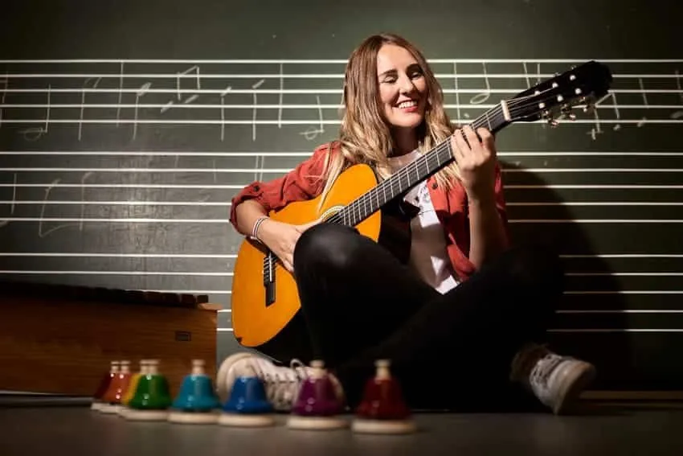

Didáctica del flamenco
Estamos volcados en aportar conocimiento en los procesos de enseñanza aprendizaje del flamenco.
El arte flamenco es el punto de partida para enriquecer la vida de las personas
"La Didáctica es una rama de la Pedagogía que estudia e interviene en el proceso de enseñanza-aprendizaje y se dedica a la formación dentro de un contexto determinado por medio de la adquisición de conocimientos teóricos y prácticos. Contribuye al proceso de enseñanza aprendizaje mediados por los objetivos, contenidos, métodos, formas, medios, evaluación desde un objeto preciso del conocimiento. Pla, R (2010) Carvajal (1990)
Aulas de enseñanza virtual
Trabajamos para ofrecer conocimiento a través de los medios digitales de comunicación. En nuestra plataforma puedes encontrar nuestras publicaciones y acceder a nuestros cursos y talleres.
Contratar servicio
Actualizamos Metodología
Estamos construyendo un nuevo método para las Enseñanzas Básicas de Guitarra Flamenca adaptada a la normativa que regula las Enseñanzas Artísticas en Andalucía.
Contratar servicioImágenes y materiales del proyecto
